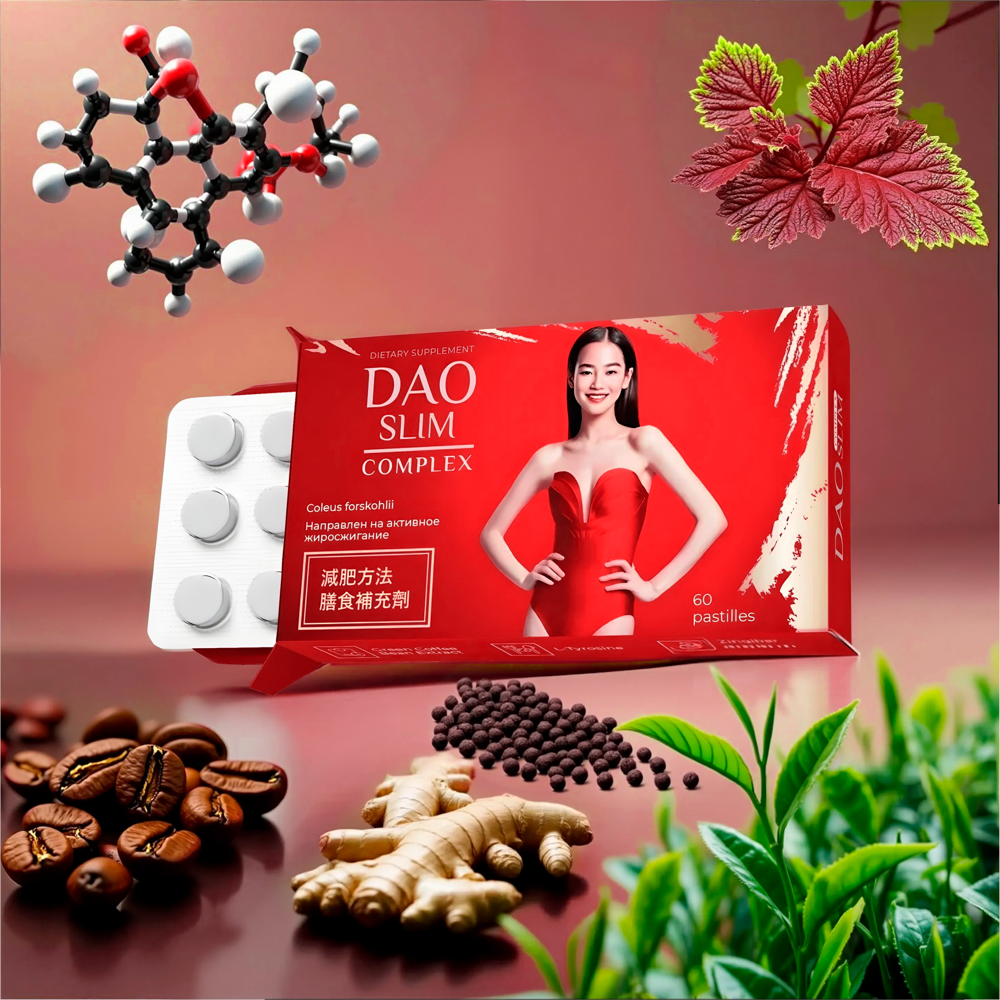
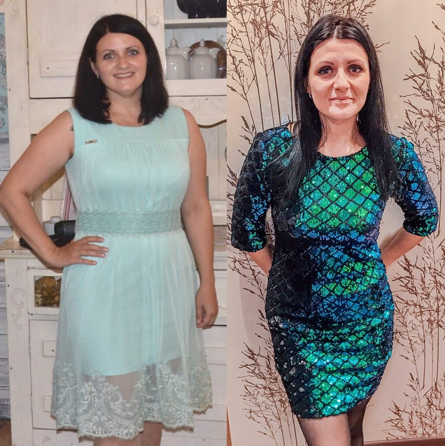
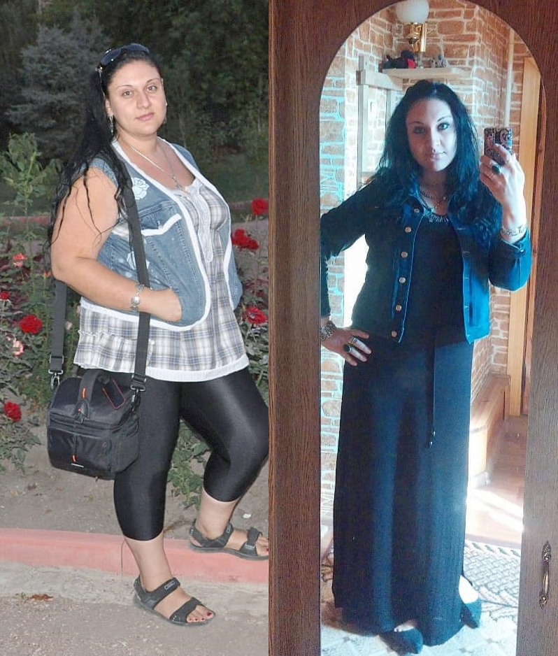
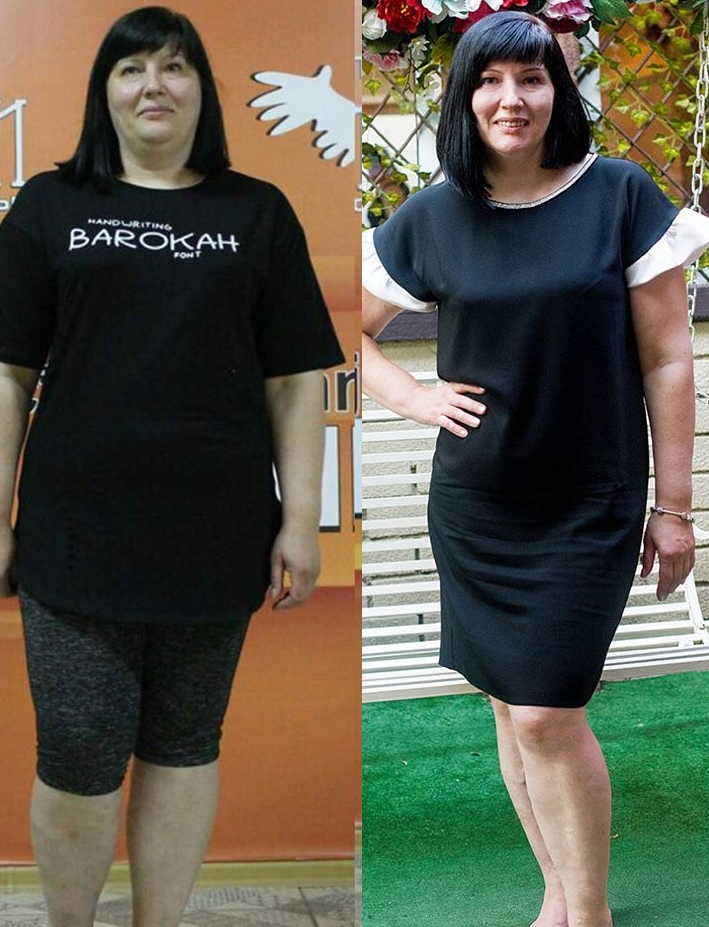
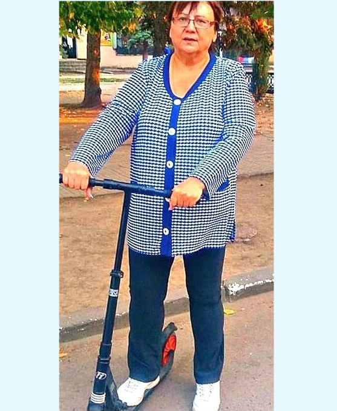
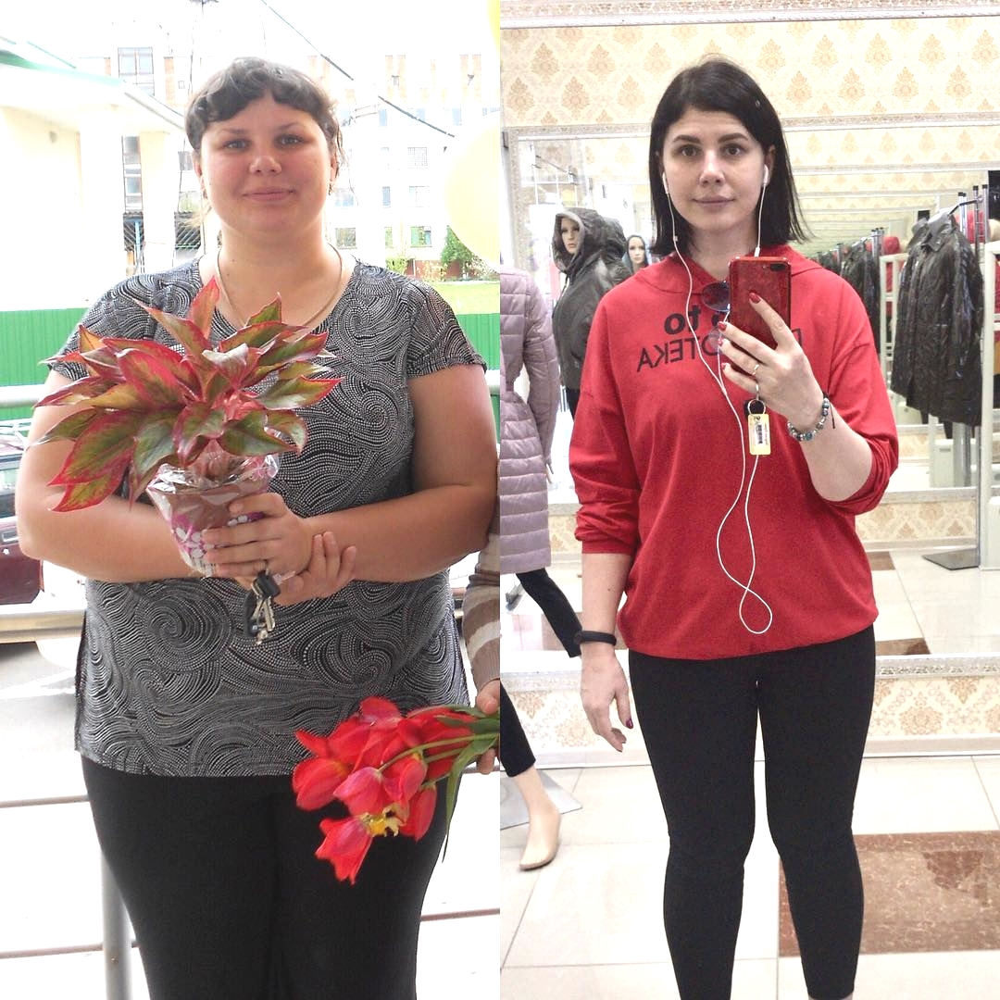
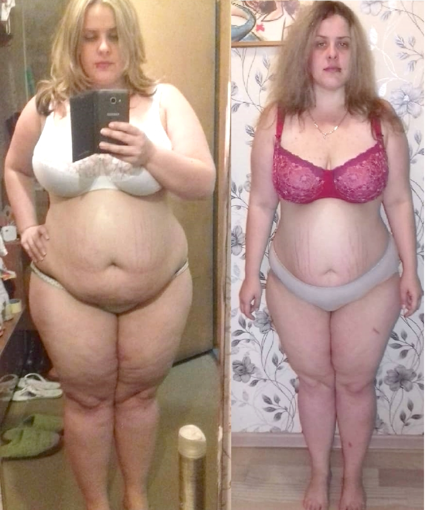
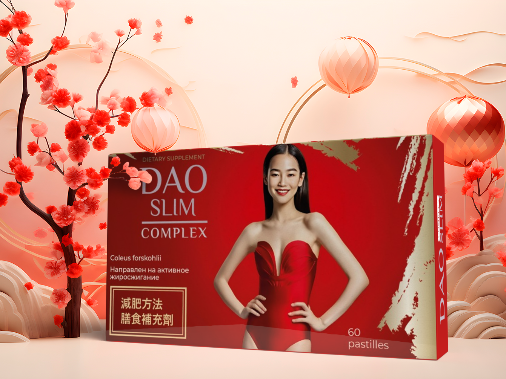

Препарат DAO Slim: Двойной контроль сахара и эффективное жиросжигание
Устали от "сахарных качелей" и лишнего веса, который не уходит годами? Исследования подтверждают: высокий инсулин блокирует распад жиров. Препарат DAO Slim устраняет саму причину проблемы.
Когда уровень глюкозы постоянно завышен, организм теряет способность тратить энергию. Каждая порция углеводов превращается в жировое депо. Комплекс DAO Slim помогает восстановить метаболизм, возвращая сахар в норму и запуская процесс естественного похудения.

Сравнение результатов: До и После
| Параметр | До приема | Курс DAO Slim |
|---|---|---|
| Уровень глюкозы | 8.8 – 11.5 ммоль/л | 5.1 – 5.7 ммоль/л |
| Лишний вес | С трудом поддается диетам | Минус 7-10 кг за курс |
| Тяга к сладкому | Постоянные срывы | Полный контроль аппетита |
| Состояние сосудов | Повышенная хрупкость | Восстановление тонуса |
Истории реальных пациентов

«Сахар прыгал до 10.4. С DAO Slim показатели в норме уже на вторую неделю. Самое крутое — пропал живот, а я даже в зал не ходила!»

«Врачи пугали переходом на инъекции. Решила попробовать DAO Slim. Теперь сахар как у молодой, и -9 кг за курс. Чувствую себя бодрячком!»

«Тяга к сладкому исчезла. Раньше не могла жить без десертов, а теперь равнодушна. Вес ушел плавно, без стресса».

«Исчезла постоянная жажда и сухость. Наконец-то цифры на глюкометре радуют».

«DAO Slim помог убрать "фартук" на животе. Сахар теперь 5.3 стабильно, никакой слабости и головокружений».

«Пропала привычка перекусывать на ночь. Сахар не скачет, аппетит умеренный. Очень довольна покупкой!»
«Уже через 14 дней сахар упал до нормы. Легкость необыкновенная, штаны стали спадать. Продолжаю курс!»
Вопросы и ответы (FAQ)
Препарат нормализует углеводный обмен. Когда сахар в крови стабилен, организм перестает вырабатывать лишний инсулин, который блокирует сжигание жира.
Да, состав DAO Slim полностью натуральный. Он не вызывает учащенного сердцебиения и поддерживает эластичность сосудов.

Готовы вернуть здоровье и стройность?
Закажите оригинальный DAO Slim со скидкой прямо сейчас!
ПЕРЕЙТИ К ОФОРМЛЕНИЮ* Количество упаковок по акции ограничено!